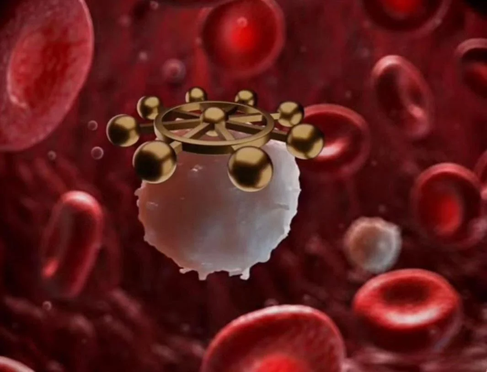

The Story
For a long time, scientists believed that life could only exist within a narrow "Goldilocks zone" of conditions. But the discovery of extremophiles—organisms that love extreme environments—completely shattered that assumption. In the boiling, acidic hot springs of Yellowstone, microscopic archaea paint the water in vibrant hues of orange and green. In the dry, freezing deserts of Antarctica, fungi hide inside rocks to escape the brutal winds. Life, it turns out, is stubbornly resilient.
Perhaps the most alien of these environments are the deep-sea hydrothermal vents. Miles beneath the ocean surface, where sunlight has never reached and the water pressure is enough to crush a submarine, volcanic chimneys spew superheated, toxic chemicals. Yet, these vents are teeming with life. Giant tube worms and blind shrimp survive here not by using photosynthesis from the sun, but through chemosynthesis—relying on bacteria that eat toxic hydrogen sulfide and turn it into energy. They have built an entire ecosystem completely divorced from the sun.
And then there is the mighty tardigrade, or "water bear." This microscopic marvel can survive being frozen to near absolute zero, boiled at over 300 degrees Fahrenheit, subjected to massive doses of radiation, and even exposed to the literal vacuum of outer space. When faced with lethal conditions, it enters a state of suspended animation called cryptobiosis, drying out and halting its metabolism until safe conditions return. Organisms like the tardigrade prove that adaptation is not just about fitting into a comfortable niche; it is about biology aggressively conquering the impossible.

Philosophical Questions
Is the universe actually hostile to life?
We tend to look at the freezing vacuum of space or the boiling surface of other planets and assume they are dead, hostile environments. But considering that extremophiles on Earth survive similar conditions, our perspective might be flawed.
This challenges our definition of "habitable." If life can endure the crush of the deep ocean and the radiation of space, perhaps biology is not a fragile anomaly, but an unstoppable cosmic force waiting to adapt to whatever the universe throws at it.
What defines a "harsh" environment?
To a human, a deep-sea hydrothermal vent is a toxic, boiling nightmare. But to the bacteria and tube worms that live there, the surface of the Earth—with its blinding sun and thin air—would be instantly lethal.
This brings up a humbling realization about relativity. "Harshness" and "comfort" are not objective truths of the universe; they are completely subjective experiences entirely dependent on the specific body you were born into.
Does comfort breed biological fragility?
Extremophiles are virtually indestructible because their environments forced them to become so. In contrast, modern humans have engineered a world of climate-controlled homes, purified water, and abundant food, removing nearly all environmental stressors.
This raises a deeply unsettling question about human evolution. By isolating ourselves from the harsh elements of nature, are we accidentally engineering our own biological fragility? It suggests that a certain amount of struggle and stress is absolutely necessary to maintain true resilience.